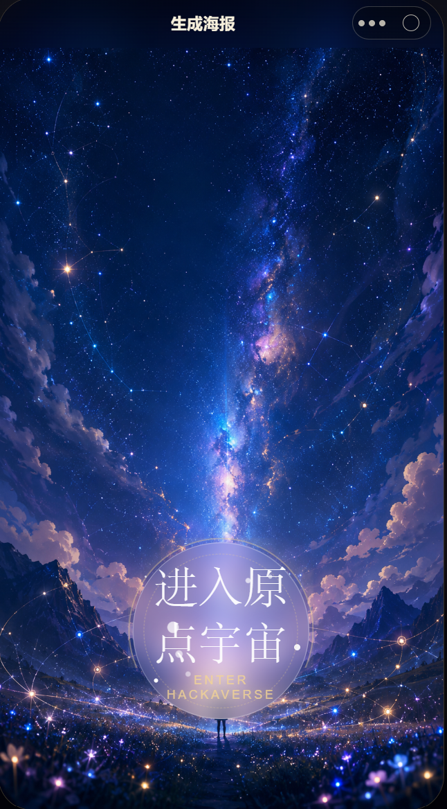
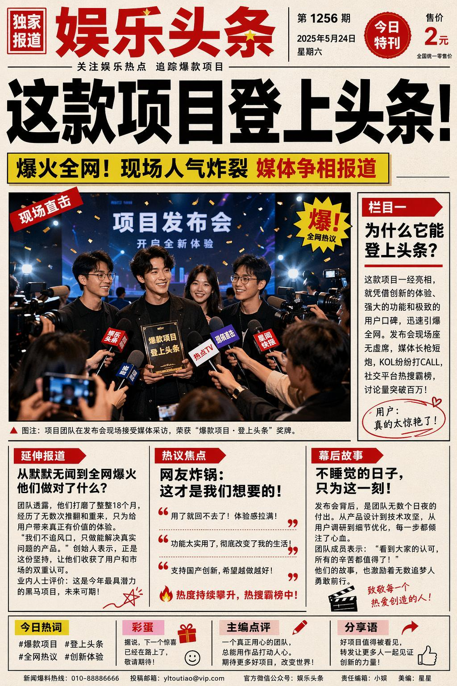
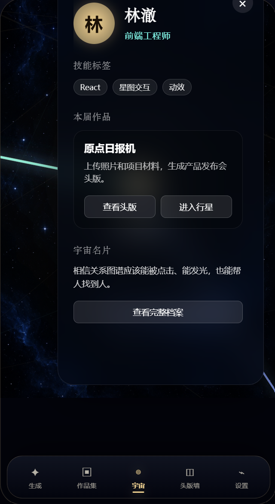

真相猎人 · 女性谣言粉碎机
面向女性议题的智能核查 Agent，对外传播名为「核她」。它不是简单给真假结论，而是围绕女性健康、职场偏见、身材容貌焦虑等高频谣言，输出可追溯、可转发、可学习的真相报告。
- 标准化核查流程：议题分类、知识库检索、多维核查、结构化真相报告。
- 三层溯源体系：源头溯源、传播路径溯源、版本演变溯源。
- 双模式交互：理性分析模式给证据，共情守护模式给反驳话术和情绪支持。
- 三级知识库：事实库、套路库、用户易感档案库，支持“查一条谣、识一类谣”。
kkky-ai · Agent Portfolio
这里收录了我围绕内容生成、信息判断、自动化办公和交互式应用搭建的 Agent 项目。每个项目都强调真实使用场景、可操作流程和可展示结果。
面向女性议题的智能核查 Agent，对外传播名为「核她」。它不是简单给真假结论，而是围绕女性健康、职场偏见、身材容貌焦虑等高频谣言，输出可追溯、可转发、可学习的真相报告。
AI 磕 CP 模拟器。用户输入 CP 信息、人物关系、情绪风格和想看的情节后，Agent 自动生成 CP 设子、剧情片段、聊天记录体、图片 Prompt 和今日磕点总结。
面向黑客松现场的 AI 报纸打卡装置。参赛者输入团队与项目信息、上传素材后，由 Poster Director Agent 生成一张印有“选手本人 + 团队 + 作品”的实体头版报纸，并沉淀进可扫码访问的黑客松宇宙星图。
真实接入飞书工作流的办公自动化 Agent。用户只需填写满意度、老板要求和 done，Agent 自动生成日报并模拟写入表格。
Hackerverse 的核心不是单纯生成一张图，而是把黑客松现场的“人、作品、团队关系”包装成可打印、可扫码、可继续生长的现场记忆。



说明：公开作品集中不会包含任何飞书 token、webhook、公司文档权限或个人账号凭据。真实办公自动化能力以脱敏说明和安全 Demo 展示。